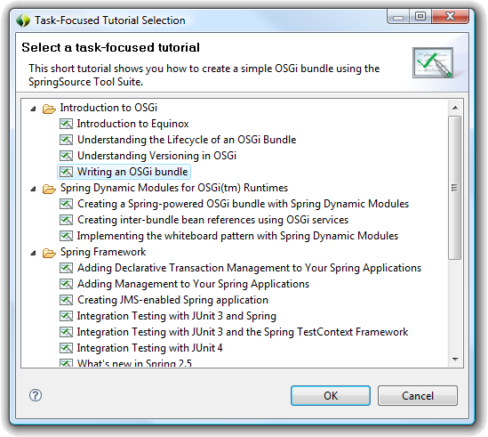
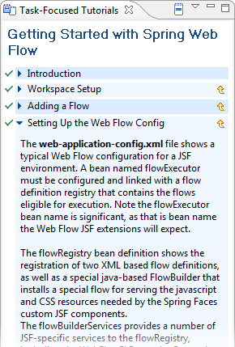
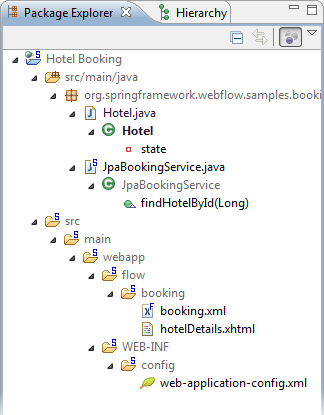

Task-Focused tutorials provide integrated tutorial content for the Spring Framework. Each tutorial creates sample projects in your workspace. The relevant aspects of the sample code are highlighted as you step through the tutorial by focusing the package explorer and editor on the relevant code. This facility enables you to interactively learn about features of the Spring Framework by looking at ready-to-run code that can be explored using the workbench.
Task-focused tutorials are available via the Help -> Task Focused Tutorials... menu item. Selecting this menu item will open a dialog you can use to select from the available tutorials. You can also select tutorials directly from STS Dashboard.

When you begin a tutorial, you will see a guided set of steps that configure the sample project in your workspace and walk you through the content. These steps are visible alongside your development environment so that you can explore and experiment with the samples.

When the tutorial shows specific code of interest, the UI will be focused on only that code. In this screenshot, the package explorer has been filtered to show you only the code that is relevant to the currently selected step of the tutorial.
